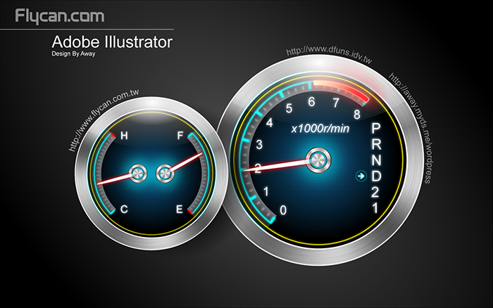

從美工到設計師！憑什麼說我是設計師？
大家都有這樣的感受，在未成為設計師之前，都對「設計師」職業的這三個字非常羨慕，都希望大家稱我們為設計師。當客戶尊敬的稱您為某某設計師時，我們也非常自豪而高興。但我希望大家明白，設計師不只是設計職業的稱呼，因為他所承擔的角色還是設計中的示範作用，所以時刻要記得：設計師何以為師？
那麼到底設計師何以為師呢？為什麼要去理解「師」的這個概念呢？其實我是換位思想，也就是站在客戶的角度，充分考慮他為什麼要找你做設計的理由？如果搞清楚理由就是找到了自己的設計之師。而自己換位思想，找不到這個師之理由的話，那麼自然您還不算是設計師，那就在每天別人叫你設計師的時候，多多思考設計師何以為師？而其中設計師的師，也是需要我們每天去努力工作和學習的，不斷的改善提升自己的設計水準和綜合素質。讓自己從設計者到設計師的蛻變中，對得起設計師可以為師。
找設計師需要理由嗎？
我們去找客戶需要理由嗎？我想更多的是目的性，而往往目的性越強烈，也越是容易失去客戶。客戶找你是需要理由的，他的目的性也是正常的，目的是滿足他要求的設計價格、風格、服務、溝通方式等等。打個比喻：市面上一件襯衫有幾十元一件的，也有上千元一件的，為什麼還有很人會買上千元的襯衫？因為他給理由，什麼理由？高級的材料、做工、成本、服務、品牌等等，所以這個理由滿足了這樣的客戶去買。再高的設計費也是要給予客戶理由的，只要考慮到給予理由，自然客戶毫無理由的選擇了你。
在接待任何一個專案和客戶，都需要將自己轉換為對方，站在他的立場考慮，你有哪些理由可以成為他心目中的設計師？你有哪些理由可以滿足這個計畫的完成？分析出客戶的需求，處理好雙方之間的冷暖關係，設計好他期待的作品，消除他疑惑的信任感，給予了充分的理由後，你就可以得到他找你的理由…
要做好設計，先別做壞設計
這句話是我考慮甚久得來的，雖然看起來很無聊，我卻認為非常重要。創業初期的設計朋友，請隨時記得這句話，然後留點空白，讓你自己去思考。因為很多人在接單子的時候，只想著是單子是利潤，而忽略了這個設計本身造成的好壞。
我曾經目睹上海一家策略公司，溫州的一個企業找他們做品牌推廣項目，該公司派人分析客戶企業背景和實際情況，若達不到自己要求，就放棄操作這個項目，即使客戶付再多的項目費，也堅持寧願放棄。我當時不明白，為什麼給那麼多錢也不做？後來我明白他們公司為什麼一直那麼成功，因為他們只做好設計，不做壞設計，那是他們維持長期發展的策略和原則。
所以在初期創業中，我也在選擇客戶上開始有了原則，盡量讓好的設計找到自己。
突出就是優勢
一定要突出，作為設計師必須要有亮點。現在會滑鼠會用軟體的人都自稱是設計師，藝術系畢業和設計師人才越來越多，這個行業的競爭激烈也是這個時代的表現之一。大大小小的工作室和設計公司多如牛毛，甚至有人冷笑設計公司現在比WC還要多。這時候設計師必須要做出自己的獨特性，創業的設計師經營公司也要與其他要有差異性，突顯就是優勢，那非常重要。
設計沒有好與壞，只有對與錯
以上我說的好設計和壞設計，自然是設計的前提。而設計有好和壞嗎？我更希望大家用對錯來看這個問題。身為設計師，他不是藝術家和商業師，首先應該是為業主解決實際問題，才是對的設計。不懂設計的人才會到處說這個設計好或不好，為什麼這樣說？因為任何一樣作品都有他的遺憾，就算是大師的五星級賓館都是有遺憾的，所以不該用好不好來判定。出發點和目的性不同，自然設計的要求和本質也不同，違背了設計本意就失去意義，更何談好壞？所以在對錯之間去思考設計，會更精確的為客戶解決實際問題，找到設計的真諦！
馬伯庸在 《親王駕到！馬伯庸教你如何做一個萬年好甲方》 說：對我們甲方來說，藝術性是第三才需要考慮的因素。
我們第二考慮的是如何有效率地把核心訊息傳達到客戶那裡去。無論多麼惡俗粗暴。當藝術性對效率有損害的時候，我們會毫不猶豫地犧牲掉藝術，即使它多麼驚世駭俗。
小捨而大得的設計很重要
「水往低處流，人往高處走」非常世俗的話，但這就是現實。做高端客戶是每位設計師的目標，也是做好設計的出路。當然，做高端不是想做就可以做的，那需要相當的實力和設計背景。誰都知道這條路，就是不知道怎麼走？不知道怎麼樣才能做到都是高端客戶。我相信有一點非常重要，那就是學會敢於捨棄部分單子，並非說小單子就不做，而是要敢捨棄不適合的項目，比如：捨棄低廉和容易導致惡劣工程的項目，拒絕貪圖小便宜不注重設計的客戶，堅持不簽訂設計協議就不出價設計的原則，抵制用低價搶來或「乞求」來的項目等等。只要堅持自己的理想和信念，慢慢的你會發現自己所擁有的客戶和專案都提升的很快，你也發現自己逐步走向成功。
不要擔心沒有單子做，先做好手上的項目
很多自己創業的設計師，最擔心的就是單子的來源。其實，老擔心以後的事情是多餘的，只有把握機會，把目前的客戶和手上的專案做好，客戶是會幫你介紹客戶的，口碑也是會相傳的。只有服務好現在的客戶，效果和業績自然都會出來。而老擔心有沒有單子做，卻沒做好現在的工作，那何來日後的發展？一步接一步，塌塌實實是任何產業都必須經歷的過程。只要在這個過程中有所原則，誠信做事做人，不要爛接單子，做好自己的客戶，慢慢的你會發現手上的項目越來越多了，你的能力也會越來越好了。
有人關注你，才說明你有亮點
對於你提都不想提的人，在你心裡一定是毫無影響力的人，而對於你討厭或者是自己看作是敵對的人，其實他身上是有你所見的亮點。生活中就有很多人會將自己的敵對視為競爭目標，將成功的同行者作為自己的勉勵點。那說明被關注，被列為他人的競爭對手，在你身上是有亮點的。被關注了就說明你在不一樣的情況成長著，面臨著各種突破。假如你還未被關注，就應該再努力，因為要做一匹黑馬就得先被關注，在眾多的關注中才會找到新的自我和成功的自我。
如今的社會，被關注並非是一件易事，而長期被關注，那需要更多的亮點來支撐。如果你被關注，記得挖掘自己的亮點，再勇於突破，在關注中好好成長，快速的進步。
江湖不相信眼淚，在創業中不需要任何藉口
失敗乃成功之母，經歷再多的磨難也只有自己知道，「吃的苦中苦，方為人上人」是任何人都曉得的道理。失敗並不可怕，可怕的是承受不了失敗的打擊。很多人因為在創業中失敗就會認為是老天爺的不公平，某種地方失利都會找出種種理由來說服自己，我就經常聽見有人埋怨道：「第一次失敗是因為自己資金不夠；大項目做不下來，失去個好機會是怪自己沒多讀點書；今年業績不好，那是因為市場不景氣等等的藉口。
設計師不是藝術家
黑是黑，白是白，設計師就是設計師，他不是藝術家，別把客戶家當藝術館。我用一句冷笑話來形容業界一現象：設計做的藝術，會被客戶罵；設計做的不夠藝術，會被同儕罵。真為難了設計師，所以我認為是我們自己想的比做的多。設計的職業就如其他行業一樣，例如：治安的職業是履行治安問題，避免社會秩序的混亂現象，但是他們並非去處理索馬利亞的海盜秩序。醫生的職業是履行救人治療，但是他不會去做消防士兵的救人工作。
設計人生就是：別人笑你一下，然後你也笑別人一下。
笑看人生的心態是設計師一生至關重要的，我說：做設計就是選擇了被評論。設計是做給大家看的，設計也是做給大家評論的。只要選擇了設計，你肯定要面對各種不同的評論和看法，那麼也要學會接受別人對你的笑，而不是人家笑你一下，你要還以氣憤。你可以學著接受或不接受，但是，不必須笑對人生。因為人生就是：別人笑你一下，然後你也笑別人一下。
設計師要先設計自己
自我設計，雖然很簡單，但我相信很多人，忽略了為自己的形像做準確的設計。身為優秀的設計師，如果連自我形像也沒考慮去設計，又怎麼幫別人設計？你又怎麼能擁有更多高品味、高要求的客戶？如何自己為自己設計呢？
每個職業都有屬於自己的特色形象，例如醫生就是白色大褂、士兵就是綠色的軍裝、商務代表都是西裝革履。而身為設計師卻沒有固定的形象，他是可以變化很大的。不管你是留鬍子，還是長頭髮，只要適合自己的，那就是有做功課的個人設計。
一位銷售人員在賣產品時，必須了解自己的產品表現並且說出賣點，才可以打動購買者。那我們設計師，就好比將自己當作一件產品，包裝和分析其賣點，才可以打動業主。
為自己做設計也不僅僅是在形像上，初期找工作的設計師可以將自己的個人作品和表格設計下，那將會在眾多的人才庫中脫穎而出；設計師在與客戶之間的談判溝通也是種設計，需要為自己的語言和形體進行設計，那對於談單非常有作用；自己開公司的設計師可以為公司做個獨特的形象設計，為自己設計的非常有作用；大家應該先放下手上忙碌的工作，好好去思考自我設計，未來一定收益非凡。
設計師是設計家也應該是夢想家
設計師的夢想難道會遜於別人？ NO！鳥巢、水立方、國家劇院、杜拜的世界第一高樓，都說明了設計師的夢想是很了不起的。假如人類不去夢想，就不會有飛機在天上飛；人類現在在探索火星，就是在夢想有一天當地球資源耗竭的時候，我們可以移民火星。這些大膽的夢想必要要去想，想了就去做。不管別人怎麼說，我也是在做自己喜歡做、認為該做的事，否則我也不會放下手邊很多項目來寫那麼多東西，其實這就是夢想。我夢想有一天能有很多設計師加盟易百集團，我可以擁有全世界最多、最棒的設計師團隊和分公司。所以我學會把視野開拓，以前只看見公司所在地範圍的地圖，現在我要看中國地圖，這個時候我的夢想也不一樣，膽子也會更大，然後更加積極的去實現夢想…
設計師的設計=價值資產
有幾次和國內一些優秀的設計師朋友，參加一些媒體活動，在面對鏡頭和記者他們表達了對設計熱愛大於得到的設計費。私下，我又問：「說實話，在你目前的資產能力而言，你做設計的目的是為了什麼？」他們都笑笑真心的回答：「為了賺錢，當然擺第一位」。不去追究這樣的真實性和意義，但是說明了人性的價值和設計資產的體現。不能去怪他們的話是對是錯，起碼那也是設計的一種價值體現，人都希望有所價值，設計也一樣。
設計，很明顯這是職業，大家的目的就是將設計轉變為資產，真正想說自己是為了愛好藝術和為了藝術願意奉獻自己的慈善家應該不多，但同時相信大家都是熱愛設計職業的。所以，請不要再談偉大的藝術，設計師和藝術家是有分別的。只有解決好實際的問題，再去考慮自己的提升。那麼就把設計如何有效的轉變為資產就成為當前的一種責任。
鄧小平說：讓一部分人先富起來。在我公司我也是這樣應用，我沒辦法讓所有的人富裕，但可以讓一部分人富裕。這個道理也說明了，生存之道比什麼都重要，有了資產才能談發展，所以設計必須要=資產，這對你相當有好處。設計師有時候和商人不一樣，他偶而也會為此信念去捨棄一些世俗的東西；設計師和純粹的藝術家又不一樣，他們也需要面對現實，所以商業設計工作者的稱呼應該比較適合用在我們身上。
幾年前一位導師從荷蘭回來，曾經他也從事設計工作，什麼苦都吃過，做過很多很多我們想像不到的艱難經歷，而如今他已經是一家大型家具企業的總裁。他告訴我：真正的設計師是要把紙上的設計運用到現實中去，體現他的價值再轉變成資產；假如沒有利用起來，就算他設計再好，也只是一張廢紙。簡單的話，其實說明了商業藝術的意義。這麼多年來，我一直把老師的話放在心上，而且帶著這句話的意思去履行我的職責。而且我相信明白的人都成功了，不明白的人永遠沒有目的的在浪費時間。
我們要把設計的東西從紙上傳達到實際操作中，真正得到價值體現，假如沒有利用起來，它不過還是一張白紙，這就是藝術與商業的融合…
設計師要懂得感恩
感恩的人一定成功，成功的人一定感恩。有人收集古董、有人收集郵票、有人收集紅木，我收集的是感恩的心。每當與新的客戶確定合作專案關係，我都會與客戶進行合影。然後收集另存於我的檔案，客戶中有從事不同行業的，有企業家也有老師和醫生，有男女新婚的，也有年長的，有外地外省的，也有很多現在成為了關係密切的朋友，成為了現在的良師益友，甚至在其他領域還有了合作關係。
每個人一生都會記得自己應該去感恩的人或事。身為設計師，更要記得曾經的那些人。感恩朋友的幫助與支持，才可以頑強的完成設計求學之路。感恩以前同事的幫助，可以快速懂得很多的社會工作經驗。感恩那些“江湖人士”，給我點明生活感悟。也因為在我初期，有幾個信任的客戶把他的房子交給我，有了第一個客戶才接著更多的項目，讓我繼續走到今天。
人，都是有感情的。我希望所有的設計師，都帶著感恩的心去面對每一天。誰曾經幫過我？誰曾經支持過我？每位設計師都要這樣想，當你的心胸寬闊了，你的作品也將大氣了，你的事業也會變的更好。對於易百的今天，自然也是因為有那麼多的朋友和客戶支持過來的，我們帶著感恩的心，去理解生活和感悟生活，更加努力的設計好每個作品，回報這個社會和國家，回報人類所居住的環境…
我收藏的是感恩的客戶群，我希望在十年後甚至二十年後，他們還很幸福的住在我曾經設計的房子裡，祝福我收藏的客戶家庭幸福指數是100%。